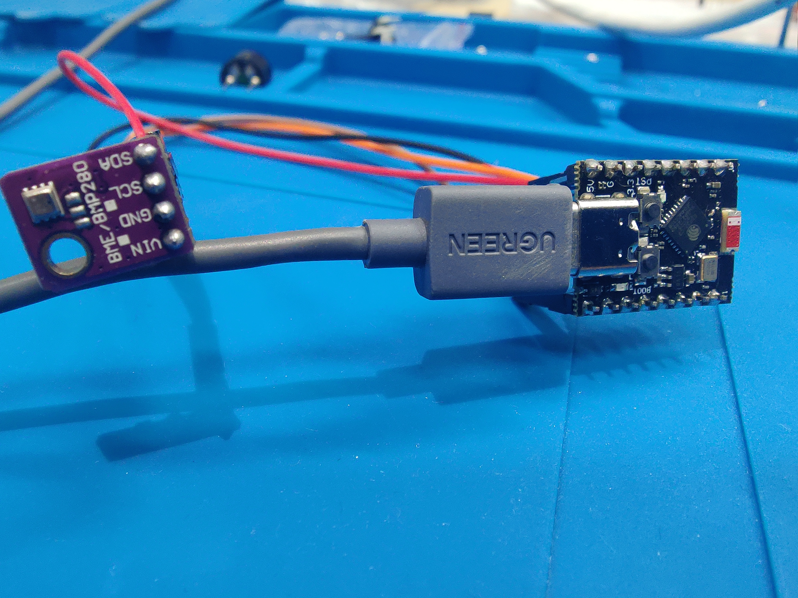
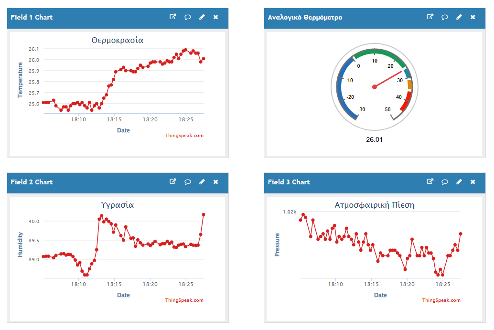

12. ESP Mini Weather Station ThingSpeak
Μικρός IoT μετεωρολογικός σταθμός με ESP32-C3 Super Mini και αισθητήρα BME280, που στέλνει μετρήσεις θερμοκρασίας, υγρασίας και ατμοσφαιρικής πίεσης στο ThingSpeak.
Περιγραφή
Το project χρησιμοποιεί ένα ESP32-C3 Super Mini και έναν BME280 για να μετρά θερμοκρασία, υγρασία και ατμοσφαιρική πίεση. Τα δεδομένα αποστέλλονται μέσω WiFi στο ThingSpeak, όπου αποθηκεύονται και προβάλλονται σε γραφήματα και dashboard widgets.
Μετά από κάθε αποστολή δεδομένων, το ESP32 μπαίνει σε Deep Sleep για 15 δευτερόλεπτα. Έτσι το κύκλωμα ενεργοποιείται μόνο για τη μέτρηση και την αποστολή, μειώνοντας την κατανάλωση ενέργειας.
Ολοκλήρωση της κατασκευής στον Σύλλογο Τεχνολογίας Θράκης.
Ομάδα Κατασκευής: Άρης Τ., Γιάννης Γ.
Α. Λειτουργίες λογισμικού
- Ανάγνωση θερμοκρασίας, υγρασίας και πίεσης από αισθητήρα BME280
- Σύνδεση σε WiFi με ESP32-C3 Super Mini
- Αποστολή δεδομένων στο ThingSpeak με HTTP request
- Χρήση τριών ThingSpeak fields για temperature, humidity και pressure
- Deep Sleep για 15 δευτερόλεπτα ανάμεσα στις μετρήσεις
Β. Υλικά
- 1x ESP32-C3 Super Mini
- 1x BME280 Sensor
- 4x Jumper wires
- 1x USB cable για τροφοδοσία και upload
Γ. Συνδεσμολογία
- BME280 VCC → 3.3V
- BME280 GND → GND
- BME280 SDA → GPIO4
- BME280 SCL → GPIO5
Δ. Βιβλιοθήκες
- Adafruit BME280 Library
- Adafruit Unified Sensor
WiFi.h,HTTPClient.h,Wire.hAdafruit_Sensor.hκαιAdafruit_BME280.h
Ε. Ρύθμιση ThingSpeak
Στο ThingSpeak δημιουργείται ένα channel με τρία fields: Field 1 για temperature, Field 2 για humidity και Field 3 για pressure. Στον κώδικα συμπληρώνονται το WiFi SSID, το password και το Write API Key του channel.
Μπορείτε να δείτε το δημόσιο dashboard του project στο ThingSpeak και την παρουσίαση της συσκευής στο YouTube.
ΣΤ. Τρόπος λειτουργίας
- Το ESP32 ξεκινά και διαβάζει τις μετρήσεις από τον BME280.
- Συνδέεται στο WiFi και στέλνει τις τιμές στο ThingSpeak.
- Αποσυνδέεται από το WiFi για εξοικονόμηση ενέργειας.
- Μπαίνει σε Deep Sleep και επανεκκινεί για την επόμενη μέτρηση.
Ζ. Εκπαιδευτική αξία
Η κατασκευή είναι καλή εισαγωγή στο IoT, στα cloud dashboards και στη χαμηλή κατανάλωση ενέργειας. Οι μαθητές συνδέουν έναν I2C αισθητήρα, στέλνουν πραγματικά δεδομένα σε online υπηρεσία και βλέπουν πώς ένα embedded σύστημα μπορεί να λειτουργεί περιοδικά με Deep Sleep.
Φωτογραφίες

